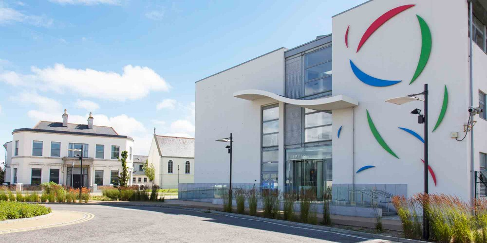

My Career in programming
My first programming language
was Scratch 2. After a short
course of C, I started
learning python

I registered on
HackerRank and
I was quite good
at solving linked list problems.


In Ireland, I did an
online course called
CS50 (highly reccomend it!)
There I learned: more C, SQL,
HTML, CSS, and JS.
My final project was
Timeline
After this, I had to stop
coding for a while.
Then I registered for another
course, CS50g.
In this course, I worked with
Lua and LÖVE, and should be
working with C# and Unity, but
I had to stop because of school.

Now I am doing a great course
in IADT. Here I refreshed
my knowlege of HTML and CSS,
thanks to great support and atmosphere.
was Scratch 2. After a short
course of C, I started
learning python
HackerRank and
I was quite good
at solving linked list problems.
In Ireland, I did an
online course called
CS50 (highly reccomend it!)
There I learned: more C, SQL,
HTML, CSS, and JS.
My final project was
Timeline
coding for a while.
Then I registered for another
course, CS50g.
Lua and LÖVE, and should be
working with C# and Unity, but
I had to stop because of school.
in IADT. Here I refreshed
my knowlege of HTML and CSS,
thanks to great support and atmosphere.